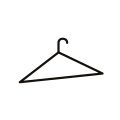
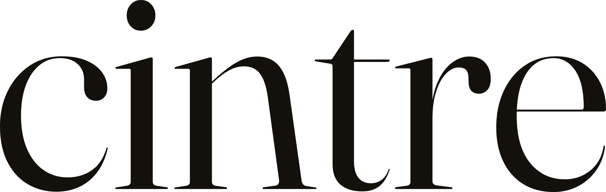
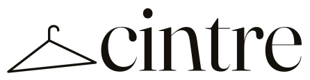
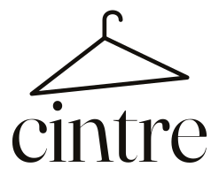

Symbole : cintre en trait fin, triangle plat, « balance » −6° (le crochet reste vertical, le triangle penche comme un vêtement suspendu). Palette et typographie de la landing — Fraunces, cream + ink.






En-tête clair, comme la landing.
Sur fond ink — footer, réseaux, photo de profil.